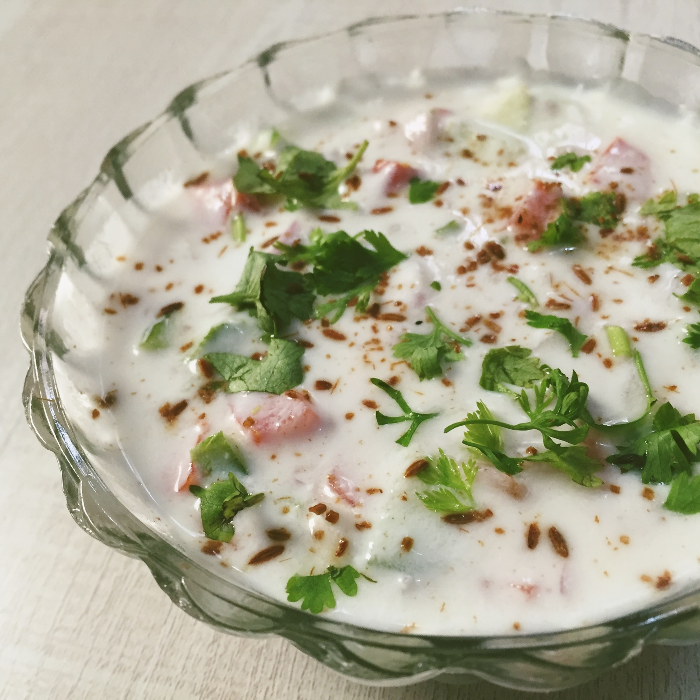

Salad with curd

Ingredients
- 1 cup Plain yogurt, chilled
- 1 teaspoon Roasted cumin powder
- ½ teaspoon Black salt (Kala namak)
- ¼ teaspoon Black pepper powder
- ¼ teaspoon Red chili powder
- Salt, to taste
- ¼ cup Red onion, chopped
- ¼ cup Tomato, chopped
- 2 tablespoons Cucumber, chopped
- 1 tablespoon Cilantro or coriander leaves, chopped finely
- 2 teaspoons Mint leaves, chopped
- 1 small Green chili, chopped finely
Procedure
- Cut all the vegetables
- Add all the Ingredients to the vessel and mis it up.
- Here the raitha is ready.